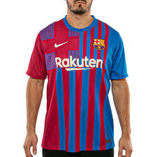

Camiseta Deportiva
La camiseta deportiva es una prenda técnica diseñada para el rendimiento físico, caracterizada por ser ligera, transpirable y de secado rápido. Confeccionada comúnmente con fibras sintéticas (poliéster) o técnicas (Q-Skin), gestiona el sudor para mantener la piel seca y regula la temperatura, mejorando la comodidad y libertad de movimiento.
.jpg) |
Precio $10.999 |
Presentacion
Hola, soy Juan Andres Stangaferro y estoy estudiando desarrollador wep para orietarme para entrar a la universidad |
MI CIUDAD
 |
Resistencia es la "Capital Nacional de las Esculturas", un museo al aire libre con más de 600 obras en sus calles. Sus imperdibles se agrupan en tres ejes:Arte y Bohemio: El Fogón de los Arrieros (mítico club cultural) y el MUSEUM, donde se realiza la Bienal Internacional de Esculturas.Espacios Verdes: La Plaza 25 de Mayo (una de las más grandes del país, con el monumento al perro Fernando) y el Parque 2 de Febrero junto al Río Negro.Historia: El Museo del Hombre Chaqueño, que explica la mezcla de culturas indígenas e inmigrantes que dio forma a la identidad local. |
Ultimas tecnologias
.jpg) |
Informacion
Las últimas tecnologías de la información están marcadas por la inteligencia artificial (IA) generativa, la computación cuántica, el 5G y la ciberseguridad avanzada. Estas tendencias, clave para el 2026, buscan automatizar tareas, procesar datos a velocidades sin precedentes y mejorar la seguridad, con un fuerte enfoque en la IA aplicada, robots humanoides funcionales y redes de datos ultrarrápidas. |
| Carta para mi amigo |
Resistencia, Chaco
Martes 14 de abril de 2026
Querido amigo espero estes muy bien, te espero cuando vengas, mientras tanto estoy haciendo un curso de HTML y esta muy entretenido;
Te estare enviando nuevas cartas, estate atento;
Ultima cosa, Cuando puedas pasa a saludar.
Noticias del dia
- Inflación de marzo: El Indec informó que el Índice de Precios al Consumidor (IPC) fue del 3,4%, acumulando un 9,4% en lo que va del año. El Gobierno y el mercado esperan una desaceleración en el corto plazo, pese a los aumentos en tarifas y combustibles.
- Ceclamo de intendentes: Jefes comunales de diversos distritos se presentaron ante el Ministerio de Economía bajo la consigna "el ajuste no da para más" para exigir fondos y recursos.Caso Maradona: Se llevó a cabo la primera audiencia del juicio por la muerte de Diego Maradona; el proceso continuará el jueves con la declaración de testigos clave.
- Caso Maradona: Se llevó a cabo la primera audiencia del juicio por la muerte de Diego Maradona; el proceso continuará el jueves con la declaración de testigos clave.
Notas del Cuatrimestre
Matematica: 9,50
Lengua: 7
Fisica: 8,25
Filosofia: 10
Remera adidas Trainig
1. GENERALIDADES
Modelo: [Ej: Entrada 22 / Own the Run]Corte: Atlético (pegado al cuerpo) o Regular.Tecnología: AEROREADY (absorbe humedad) o HEAT.RDY (refrescante). |
2. MATERIALES Y TEJIDO
Composición: 100% Poliéster reciclado (tejido interlock o de punto doble).Sustentabilidad: Fabricado con Primegreen (materiales reciclados de alto rendimiento).Propiedades: Secado rápido, alta transpirabilidad y paneles de malla en zonas de calor. |
3. DISEÑO Y DETALLES
Cuello: Redondo acanalado.Identidad: Logo de Adidas (Performance) estampado por transferencia de calor o bordado.Extras: Detalles reflectantes (si es para running) o las 3 tiras clásicas en los hombros. |